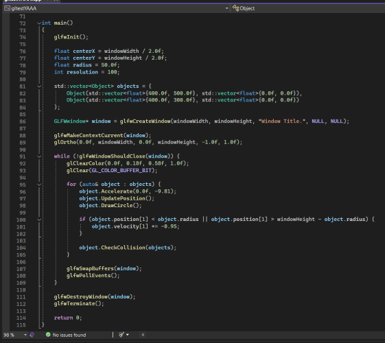
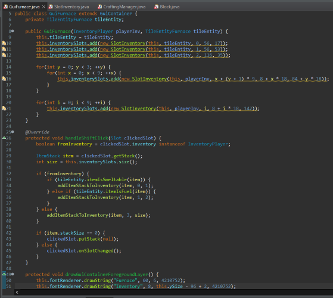
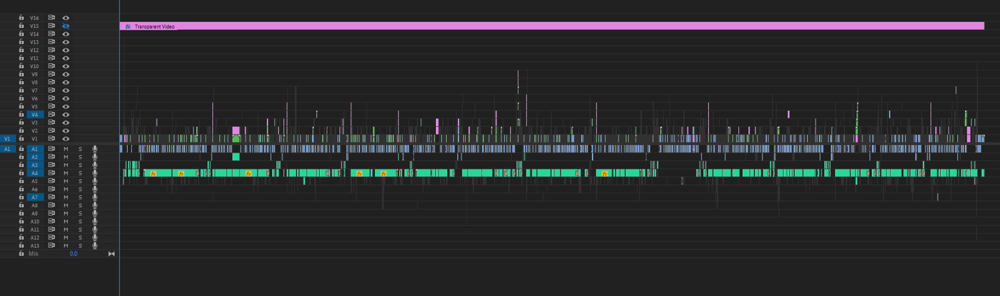

I am a Computer Science undergraduate currently attending Fresno City College
University
I have plans of going to Fresno State next semester, while there I want to learn a lot of things relating to both software and game development.
List of things I want to learn
Rasterization
Game Design
Data Analysis
Machine Learning
OS Development
Future Plans
I haven't thought too hard about this but I'll write something here when I get the chance

OpenGL C++ Gravity Simulation Example
Where do I have experience
I've used a wide variety of languages for various purposes.
Python
Python was my first language, I mostly use it for making smaller scripts or for plotting data. A lot of the stuff I've written in Python is mainly used for or in conjunction with larger projects written in other languages.
Python Matplotlib Example Code
HTML & Javascript
I've made a few websites for friends, with most of them being smaller web development projects. Most, if not, all websites I've made also incorporate Javascript into them in some form or another. A lot of them are for automatically creating layouts with some data, however some of them also use Javascript as a backend to import, calculate, and return data in some form or another.
C# & Java
These are probably the languages I've used the most. While I do have experience in C and C++, I also like the simplicity and similarities between C# and Java the most. I've worked on games written in SFML and LWJGL as well as made complex algorithms in C# to quantify the difficulty of charts in some of my favorite rhythm games. Python may have been my first language, but Java and especially C# were what got me into programming.

Minecraft Light Weight Java Game Library Recreation Test
Other hobbies and things I'm good at
I have a lot of interests, and in turn that also means I have a lot of hobbies. These are all additional skills I've picked up while figuring out what I actually wanted to spend my life doing.
Video Editing
I have been editing videos since I was Thirteen, starting with Sony Vegas before moving on to Adobe Premiere and now Adobe After Effects. In recent years I've been more on and off with it since I spend most of my time either messing with Software Renderers or trying to make music.

Premiere Pro Project Timeline
Photoshop/Graphic Design/idk
I wouldn't really call it graphic design since I've mostly just used Photoshop for making thumbnails and banners, but calling photoshop a 'skill' doesn't feel right either. Either way, I have a lot of experience using Photoshop, as well as some other free tools such as paint.net and PaintTool SAI. As previously stated I've used Photoshop for making thumbnails and banners but can use it to make a wide variety of example or template graphics as well.